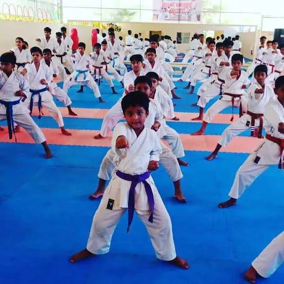
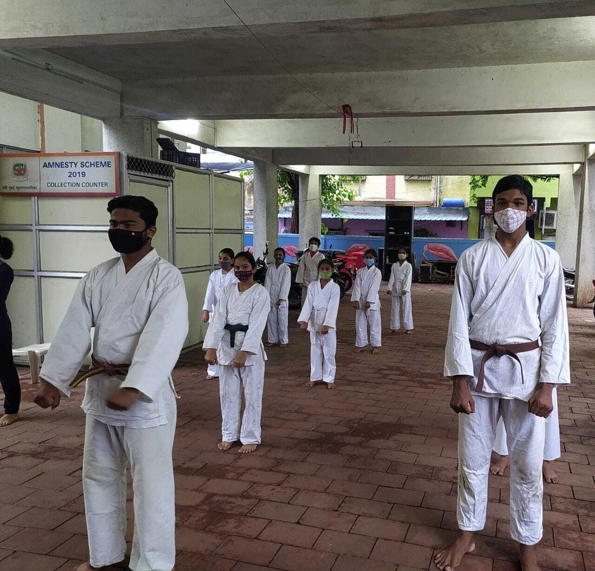
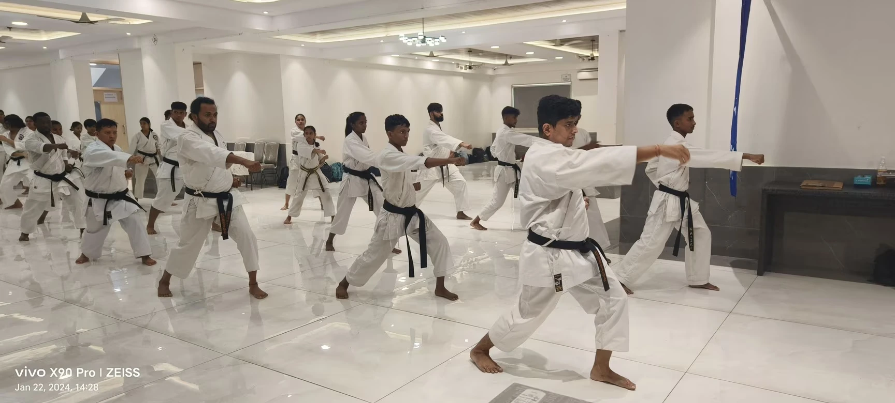
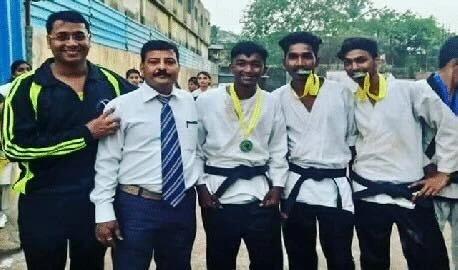

Karate programmes
Explore a path that meets you where you are. Beginners, returning students and aspiring competitors can each have a different starting point.
Draft program guide. Karate training is free of charge; there are no paid classes. Exact ages, availability, class duration and schedules require confirmation.

Kids karate
A playful but purposeful introduction to karate. Give growing confidence a place to take root.
- Movement and coordination
- Listening, focus and respectful practice
- A positive introduction to karate basics

Teen karate
A practice that makes room for independence, perseverance and steady progress.
- Progressive technical foundations
- Balance, control and coordination
- Personal goals and constructive feedback

Adult karate
Start something new, return to the mat or deepen your practice. Progress does not require a perfect starting point.
- Fundamentals at an appropriate pace
- Technique, movement and conditioning
- A structured approach to continued learning

Sport karate
A proposed pathway for students ready to explore performance. Readiness and eligibility should be discussed with your instructor.
- Kata: form, rhythm and precision
- Kumite: distance, timing and control
- Competition preparation by assessment
Common questions
Do I need any experience?
No previous karate experience is needed to explore a beginner program. Tell us your experience level in your trial request so the academy can recommend an appropriate class.
Can my child try a class first?
A trial is a useful way to meet the instructor and experience the training environment. A parent or guardian should make the enquiry and confirm age suitability with the academy.
What should I wear or bring?
Comfortable sportswear and a water bottle are a sensible starting point. Confirm footwear, equipment and any additional requirements with your instructor before attending.
Where and when are classes held?
Free training is conducted at Ganesh Vidyamandir School, Dharavi, and at Pratiksha Nagar, Mumbai. Contact the academy to confirm the current timetable, meeting point and availability before attending.
How much does a trial cost?
Karate training conducted by Akash Shinde is completely free of charge. There are no paid classes and no training fees. Please confirm the session time and availability before attending.